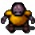
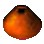
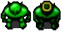
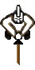
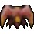
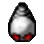
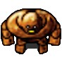

Wraithwings


A lot of people died to bring you this information:
It is rumored that there are still worse foes in the Beneath, but none have returned to tell the tale.
The five-foot Dungeon Roach is a common sight in infestations all over the world. It can survive all sorts of adverse conditions - extreme heat and cold, low oxygen, even weak acid. They don't like bright light, although it will survive in bright light if it has to. Although it can stand extreme heat, its carapace is not equipped to withstand explosions. Dungeon roaches feed on whatever they are able to scavenge, their large, sophisticated digestive system doing most of the work. On the Eighth, they are traditionally used as a source of meat, which, when the internal organs are removed and the meat cooked thoroughly, surprisingly turns out pretty good. Smitemasters often have a clause in their contracts which state they retain ownership of any roaches they slay for this reason - it makes a good supplement to the seasonal smitemastering trade.
Roach Queens give birth to roaches, fulfilling much the same role as queen bees. Unlike bees, however, all roaches that are born are considered workers - the roach queen usually carries around most, if not all, of the ingredients required to make roach eggs and is usually fed by her worker children during quiet, safe moments (and occasionally feeds on her worker children, usually when she is low on a few key roach-baby ingredients). Roach queens can be identified amongst their children by their enlarged abdomen and glossy, silver wings (although they never fly).
When threatened, the roach queen lay eggs in promising-looking areas. As these are roaches, this is almost anywhere. The larvae will grow in a matter of seconds. Roach queens lay eggs at a much faster rate when they perceive a threat, relying on their children for defense. Some roach queens are used in the roachmeat industries, but it turns out to be far more cost effective to hire smitemasters to clean out infestations and haul the carcasses back up than to breed roaches in captivity (which is costly, as the problems when a roach gets loose are much greater than with other, more docile meats.)
Wraithwings are one of the few dungeon creatures that fly. Even then, they can't do it very well. They usually have to stick to near the ground, where the air currents won't buffet them around so much. Wraithwings resemble small winged demons, and anyone who's really studied flight can tell you that it's a wonder wraithwings can fly at all. They're heavier than most birds, with not a great amount of strength in the forelimbs. It takes constant, steady flapping to keep them afloat, but they occupy a niche that few other creatures do. Up on the surface, they usually stick to the expansive and deserted lowlands that few other creatures inhabit because of the minor problem of the extensive flooding every summer. During that time, they migrate into the dungeons because they have strong, adept legs and can cross the deep chasms that defeat every other creature who makes the attempt. Wraithwings are vicious fighters but easy to slay.
Evil Eyes don't have any discernible method of digestion, but are not subtle in their feeding habits. Evil eyes get their name from their appearance - they appear to be a giant eyeball, covered in a translucent slime. Normally, evil eyes can be found in groups of ten to twenty, although more and less have been sighted often enough to confirm this is merely a tendency. Their teamwork in watching certain areas, and the observed gathering of evil eyes, suggests some sort of communal instinct, and possibly communication, although nothing as yet is evident from their behavior. They will watch for likely prey to cross their field of vision and stir into life, striking at it when close. They quickly cover their prey in slime to stun and prepare it, then slowly digest it. Thankfully, they're quite docile until they notice their prey, which can make a thoughtful delver's job easier. Watch out for mad eyes, which are a more vicious breed.
Evil eyes are sometimes used to make eyeball pudding, in nearly all cases inadvisably and against the wishes of any and all who have to eat it.
Spiders are none too bright, but they often sit and guard treasure captured from unwary passers-by. Their vicious tenacity and tough carapace makes them more dangerous than the, thankfully, more common dungeon denizens.
'Neather

The legend goes that a prior king grew tired of his annoying young son and jokingly suggested that the lad go play in the castle dungeons. Taking his father seriously, the boy wandered deep into the dungeon chambers and was never found again. It is said that he did not perish, but lived the rest of his life in the dungeons by preference. Becoming a master of his new habitat, he learned all of the secrets of the underground world and formed alliances with the monsters that dwelt there. He named himself the 'Neather and schemed to rise from the dungeons to claim the throne when his powers were able. Beethro Budkin claims he took care of him, but there are other 'neather-folk who have allied themselves with the denizens beneath.
Antlions

Antlions live underground, remaining rooted in one spot for most of their life. They will attack anyone walking over their hole for food.
These citizens of the Empire are being trained to become slayers. They appear unassuming, but if you cross them, you will have a fight on your hands.
Goblins

Goblins are one of the few denizens of the Beneath that are smart enough to match wits with intruders from above. They're cunning, wily, and even speak a vague approximation of the aboveground language. Their society is a rudimentary, tribal culture that exists in pockets of the Beneath, usually at the lower, safer levels of dungeons. Goblins having occasional contact with humans have assimilated the more materialistic values of the abovegrounders. Sometimes they dabble in making small wooden ornaments with varying degrees of skill. This, however, grates at the soul, and often they'll just give up and mug passers-by instead. Those rare goblins who are integrated into human society, having learned not to attack people and get taken out into the streets and killed, usually take menial jobs. Thankfully, they enjoy the simplicity and directness of the work as opposed to the politicking and bickering that accompanies more cerebral endeavors humans undertake, and for the most part they are treated kindly.
Isolated groups of goblins usually work quite differently. While very simple and sometimes brutal, their society is surprisingly advanced. Goblin tribes are led by a king, usually the strongest of the lot. When they attack, they tend to go for the back, believing that honor takes a second place to staying alive.
Rock golems were an early creation of the Underground Empire, back in the days when they were just figuring out the basics of mineral-based life. Unfortunately, the Empire found them rather difficult to control - not because they are rebellious or willful, which they are not. But they are really, really dumb, and they just don't understand instructions very well. They don't remember them very well, either, unless they're really simple. If you tell the rock golem to go to the field, pick up some nice round rocks, and carry them to your house, you may discover later that the rock golem got confused, pulled your house up from its foundations, and carried it to the field. As a result, the empire tends to only use them as brute force defenders when possible.
While golems do have a brain, it only gets used when they are faced with something that their raw instinct can't deal with, such as dealing with obstacles in their path. While they can speak, their vocabulary is rather limited and shallow. They don't need to eat, and instead take great pleasure in crushing their prey with their large and heavy fists. They won't kill anything else that is a rock, and since their intelligence level is low, this means that someone clever could easily disguise themself as something rock-shaped and escape their clutches.
Rock golems are very difficult to kill permanently, as if you break them down, they will eventually reconstruct themselves over time. It takes much longer for them to be prepared for combat again, however. It is possible to destroy a golem completely by using a bomb, however.
The most disturbing of all the monsters in the Beneath looks altogether too much like a giant, pink brain. Monsters that resemble body parts are very, very creepy. What's even creepier is that the brain has a puny attack. At least, when fighting directly. However, it knows all the ins and outs of the surrounding terrain like the back of its...brain...and will hijack the thought patterns of other creatures, giving them gentle suggestions on how to attack danger when it approaches. So when that mindless roach fights with the strength of ten men, you will know who is responsible. To adapt to brains, you must learn how they think. And when you do, you will learn that sometimes intellect is no match for raw instinct. Not in chess, maybe, but in other places. They do, for better or for worse, have a mouth, so presumably they eat.
Soulless

Soulless are mindless automata constructed by the Empire for deathdealing. They generally stand in place as sentries and follow simple programmed instructions.
Mimics move exactly as the player does. Pushing the mimics against obstacles will change their position relative to you. You can use them to fight monsters at a distance, and it will be as if you fight the monster yourself.
Swordsmen wield a Really Big Sword and are deadly foes. They may look like someone you know, but that is just coincidence. (Or is it?) You must take them out quickly to avoid severe damage.
The Red Guard is a branch of the Empire's defenses. They are deployed whenever there is a serious threat to their domain. A platoon of guards generally has an experienced leader at its head.
It wouldn't be fair to say that every person on the snow-covered continent of Rasaras is a bloodthirsty cutthroat. No, of course not--many Rasarans are merely opportunistic cheats. If you sail into the Brentish Sealet with goods to trade, Rasarun port authorities will pull out an abacus and figure if it will be most beneficial to trade with you, to board and murder your crew, or to sink your ship from afar and salvage goods from the watery wreckage. When this lot is actually trying to pick a fight, however, things can get a lot worse.
Fegundo

The life of a fegundo usually starts in the cold of winter, where the bird is born in small bursts of flame that are created from the ashes of their parents' remains that lie in the southernmost part of the Eighth. This means that a fegundo will never know their parents, and are forced to survive and thrive on their own from the start. Around the middle of winter, the adult birds will fly up to Sun Island in order to find a mate. When the end of winter comes, the male and female birds will take one final flight together, going directly to the sun. When they reach inside the sun, the male and female fegundo curl together into a ball, and are then burnt to ashes. These ashes are sucked through the north edge and explode out the south edge of the Eighth, allowing their offspring to be created from their remains. It is believed that the fegundo is the only animal that can "survive" exploding like this.
Water skippers inhabit the rivers and swamps of the Eighth. They lie in wait, then jump out and bite their prey whenever it comes to the water's edge.
Seep

Seep are an amorphic life form engineered by the Empire. Although they can only survive living within solid rock, they are capable of briefly reaching out to grab and devour prey. 75th Geozoologist once made the following note of them: "As an amassage of plendorous vapors, the Seep may permeate all manner of solid substances, yet our engineering has so far not enabled the agoric movement for which we had aimed."
These custodians of the Empire bring order to their domain. Their withering gaze is used to strike fear in the souls of men.
Rock giants

What happens when you combine four rock golems into one? You get something four times as large, four times as strong, and four times as dumb.
The Empire's elite assassins. Crossing one of these is probably the last thing you will ever do.
There are distinct varieties of the giant wyrm. Rattlesnakes are blue reptiles with a giant rattle on their tail. Adders are green with a giant maw. Serpents are red and scaly. These massive reptiles live deep in the dungeons Beneath. They are subtle creatures, attuned to the secret vibrations of the soil like only a giant Worm can be. They're normally much larger than any other creature around, some having been sighted that are hundreds of feet in length. Thousands, if using actual feet. One of the things serpents have given up to grow to such a size, in fact, is any ability to fine-tune their movement.
Don't let this sad regression fool you, however, into thinking that serpents are easily dealt with, oh no. Their muscles are strong enough to resist even the greatest of pressures. Their skin is hard as rock. Smitemasters will occasionally - if they relish the prospect of carrying a heavy roll of skin up a mile or so of stairs - roll up serpent skin and sell it aboveground, where it's used as a kind of leather. It isn't that flexible or easy to work with, but it's incredibly durable and very strong. The only problem is getting some, as it's heavy...and on serpents.
The Living Tar is one of the most intimidating sights seen in the Beneath. It's not hard to see why. Not because it has a very thick outer skin, held together by a very strong form of surface tension (indeed, unless it's stabbed on a flat part where you can get a sword in far enough, it won't even break). Not because it can grow up and over walls, covering them completely in blue goop (the only way to uncover them being to plough into it). Not because it forms rubbery, stable globules of tar that block up vital passageways that won't be broken by the strongest thrust. Not even because it can split into completely separate, sentient, savage entities called tar babies when there isn't enough surface tension left to hold solid chunks of tar together. It's because everything the tar does, even when it only looks like a slightly transparent glob that just visibly pulses like an infernal blood vein, seems to be infused with malice.
What's worse - sometimes a Tar Mother, which only ever appears as a pair of bulging eyes glaring out of their lair, will reside deep within the tar.
There are other varieties of tarstuff that have been bred in the Beneath. Awakened mud is weaker, but it only vulnerable on rounded corners. The forbidden gel is dark green, very tough, and only vulnerable along the inner folds. Unless you are quite fortunate, it is often impossible to completely clear at all.
Wubbas are strange, strange creatures. They have no discernible eating habits, though it's surmised that they eat lichen and the occasional squashed corpse by ingesting it through their porous skin. There have been reports of them eating larger creatures, but usually this requires them to be in a mushy form beforehand. This is no problem for the wubbas - the outer portion of their body is soft and fluffy, rather like a marshmallow, but they have a harder core where presumably the internal organs are. That is, if the skin does not itself take care of some of the functions we normally associate with, say, the stomach or the spleen.
Wubbas get their name from a common childhood toy that looks just like them - a big white blob. These are everywhere because they can be specially molded, put together with love, and sold for hundreds to a family with more money than sense. Or a poor parent can just grab a pillowcase, stuff it with something cuddly, sew it up into a vaguely oval shape and present to thankful child.